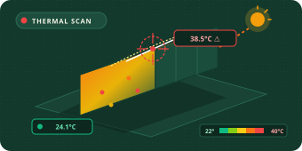

01 / DIAGNOSE

Heat Scan &
Vulnerability Audit
Understand building heat exposure, identify climate vulnerabilities and establish priority areas for attention.
Scope & Deliverables
- Building heat exposure and vulnerability assessment.
- Microclimate and urban heat-island risk analysis.
- Identification of climate vulnerabilities and potential solutions.
- Prioritised recommendations and action plan.
INDICATIVE PROJECT RANGE
€5,000–€10,000